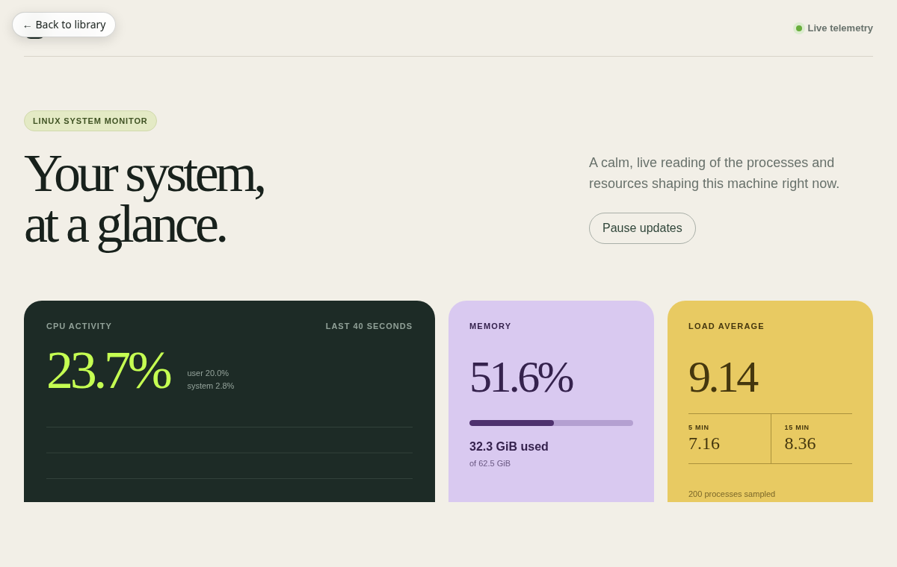
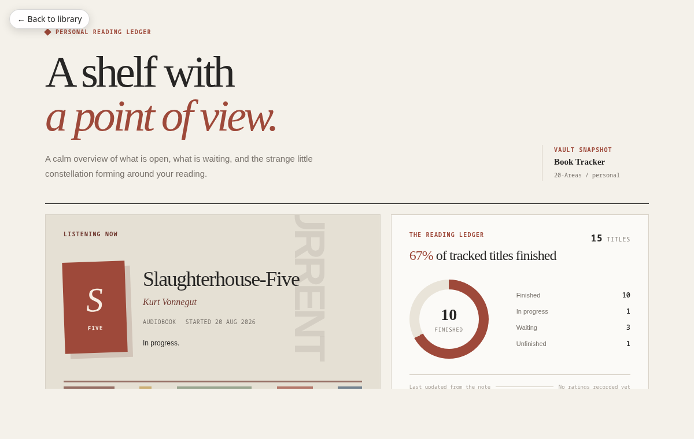
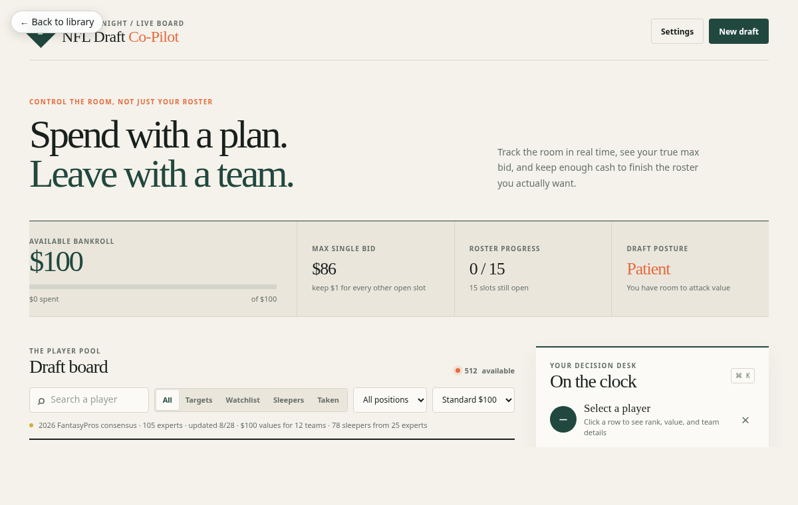
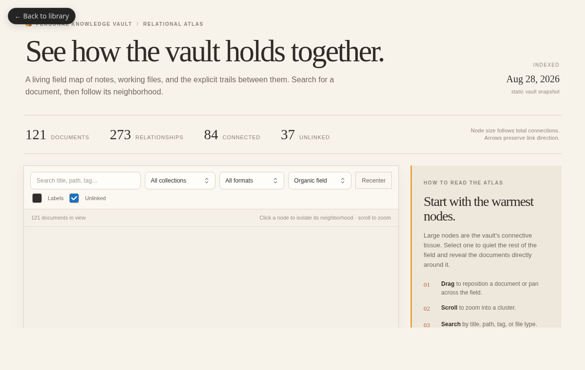

Find the right artifact faster
Visual cards, thumbnails, search, and pinning in Artifactd Home.
FIELD NOTE / 01
Artifactd is a local-first runtime that gives agent-created browser tools a durable home — with a stable URL, version history, and a place to come back to.
02 THE PROBLEM
Claude can make a beautiful, connector-powered view. But the useful thing is still tied to where it was made.
On Linux, the doorway is closed.
Without Claude Desktop, there is no obvious place to open, revisit, or maintain the view.
03 THE SOLUTION
Inspired by systemd: small, dependable units with a known place to live. Artifactd applies that idea to agent-made browser tools.
Describe the tool. Iterate on the source.
artifact createEvery commit is a complete, immutable checkpoint.
v1 → v2 → v3A small local runtime, ready when you are.
localhost:7337One stable URL. One local library.
my-tool.artifacts.localhost04 ARTIFACT SPEC
For developers, an artifact is deliberately familiar: a directory of static files, a tiny manifest, and a publish step.
{ "artifact": { "id": "my-tool" }, "code": { "format": "files", "entry": "index.html" }, "runtime": "web-static" }
artifact create --id my-toolartifact publish ./my-toolhttp://my-tool.artifacts.localhost:7337/05 EXAMPLES
These are real standalone tools already living at stable local URLs — each made for a different job.




06 NEXT STEPS
The MVP proves the local artifact loop. Next, we make discovery, trust, and recovery feel just as effortless.
Visual cards, thumbnails, search, and pinning in Artifactd Home.
Provenance details and predictable update confirmation before a new version lands.
Version browsing and one-click restore for durable checkpoints.
Clearer first-run guidance and better supervised deployment ergonomics.